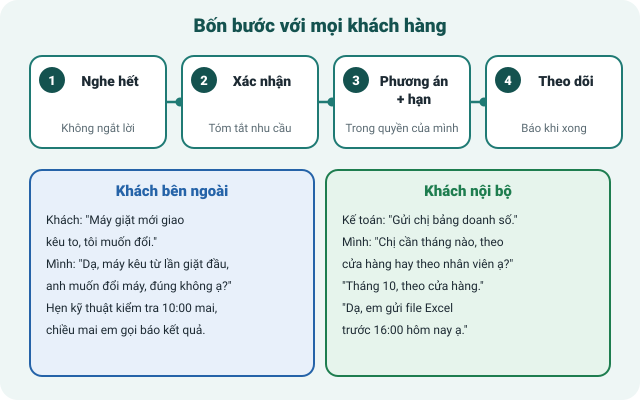

K3 · Giải quyết vấn đề và ra quyết định › Bậc 3 Vững vàng
Xử lý yêu cầu và phàn nàn của khách hàng nội bộ và bên ngoài
Bài này làm Tờ 3: Phiếu yêu cầu khách hàng. Mẫu in.
1. Mục tiêu
- Tóm tắt nhu cầu của khách hàng thành một câu để khách xác nhận.
- Đưa phương án trong quyền hạn của mình, kèm thời điểm báo lại.
2. Khởi động truy xuất
- Trang ghi họp có 3 ô nào?
- Tin nhắn tóm tắt họp kết thúc bằng việc gì?
Đáp án
- Quyết định; việc (ai, gì, hạn); câu hỏi còn mở.
- Xin mọi người xác nhận hoặc bổ sung.
Xem lại: Nghe và chốt việc sau họp.
3. Giải thích
Khách hàng của bạn là ai? Khách bên ngoài là người mua hàng, dùng dịch vụ. Khách nội bộ là đồng nghiệp cần kết quả từ bạn. Ví dụ: kế toán cần số liệu, kho cần đơn hàng đúng mã.
Cả hai loại khách đều cần cùng một điều: được hiểu đúng, và biết khi nào có kết quả.

Bốn bước xử lý yêu cầu
- Nghe hếtKhông ngắt lời, không giải thích vội.
- Xác nhận"Anh cần…, đúng không ạ?"
- Phương án và hạnChỉ hứa điều mình làm được.
- Theo dõiBáo lại đúng hẹn, kể cả khi chưa xong.
Nghe hết trước khi giải thích. Khách đang bực thường cần được nghe trước. Giải thích sớm dễ bị hiểu là bào chữa.
Xác nhận bằng một câu. Câu tóm tắt gồm vấn đề và điều khách muốn. Khách nói "đúng rồi" thì bạn mới bắt đầu xử lý.
Phương án trong quyền hạn. Người mới thường chưa được quyết đổi hàng, giảm giá hay hoàn tiền. Đừng hứa thay cấp trên. Hãy nói điều bạn chắc chắn làm được. Ví dụ: "Em chuyển kỹ thuật kiểm tra, chiều mai em gọi báo kết quả."
Theo dõi. Ghi hẹn vào Tờ 1. Đến hẹn mà chưa có kết quả, vẫn gọi báo tình trạng. Im lặng làm khách lo hơn tin chậm.
Khi nào chuyển lên cấp trên? Khi khách đòi điều ngoài quyền hạn của bạn. Hoặc khi có vấn đề an toàn, tiền lớn, hay khách đe dọa. Chuyển kèm phiếu đã ghi, để khách không phải kể lại từ đầu.
4. Ví dụ tại nơi làm việc Việt Nam
Tình huống giả định. Vy làm nhân viên bán hàng được 6 tuần ở một cửa hàng điện máy tại Thủ Đức. Một khách quay lại, giọng to: "Máy giặt mới giao hôm qua kêu ầm ầm, tôi muốn đổi máy khác!"
Vy để khách nói hết. Rồi Vy tóm tắt: "Dạ, máy kêu to từ lần giặt đầu, anh muốn đổi máy, đúng không ạ?" Khách gật đầu.
Vy biết mình không có quyền duyệt đổi máy. Vy nói: "Em ghi phiếu và đặt kỹ thuật đến kiểm tra 10:00 sáng mai. Chiều mai em gọi anh báo kết quả và phương án đổi hay sửa." Vy ghi Tờ 3 và báo quản lý cửa hàng ngay.
Kỹ thuật phát hiện bulông cố định lồng giặt khi vận chuyển chưa tháo. Tháo xong, máy chạy êm. Chiều hôm sau, Vy gọi khách báo kết quả như đã hẹn.
Vì sao cách này tốt: Vy không hứa đổi máy khi chưa có quyền. Câu xác nhận giúp khách thấy mình được hiểu. Cuộc gọi đúng hẹn giữ được lòng tin.
5. Thực hành
Tình huống giả định. Bạn là nhân viên IT mới ở một công ty logistics tại Bình Dương. Chị Thảo phòng kế toán nhắn: "Máy in tầng 2 lại hỏng rồi! Chị cần in 50 hóa đơn trước 11:00, xử lý giúp chị đi!" Bạn chưa biết lỗi gì. Máy in tầng 3 vẫn chạy.
Viết câu xác nhận và câu đưa phương án có hạn.
Gợi ý 1
Chị Thảo cần sửa máy in, hay cần in được hóa đơn trước 11:00? Điều nào gấp hơn?
Gợi ý 2
Có thể đưa phương án tạm cho việc gấp, rồi hẹn giờ cho việc sửa máy.
Lời giải mẫu
Xác nhận: "Dạ, máy in tầng 2 không in được, chị cần in 50 hóa đơn trước 11:00, đúng không ạ?"
Phương án: "Em cài máy in tầng 3 cho máy chị ngay, 10 phút xong để chị in kịp. Em kiểm tra máy tầng 2 trong sáng nay, 14:00 em báo chị kết quả."
Ghi Tờ 3: người yêu cầu, nhu cầu, phương án, hẹn 14:00.
(Tình huống là giả định.)
6. Tự kiểm tra
Chọn đáp án. Mỗi lựa chọn đều có giải thích.
Câu 1. Khách đang bực, kể dài về đơn hàng giao trễ. Bạn làm gì trước?
-
Chưa đúng. Giải thích sớm dễ bị hiểu là bào chữa. Khách cần được nghe trước.
-
Đúng. Đúng. Nghe hết và xác nhận giúp khách thấy mình được hiểu.
-
Chưa đúng. Chưa rõ vấn đề mà chuyển thì khách phải kể lại từ đầu.
Câu 2. Khách đòi giảm giá 20% vì giao trễ. Bạn chưa có quyền duyệt giảm giá. Câu nào phù hợp?
-
Chưa đúng. Hứa ngoài quyền hạn có thể không thực hiện được, làm mất lòng tin hơn.
-
Đúng. Đúng. Bạn chỉ hứa điều mình làm được, kèm thời điểm báo lại.
-
Chưa đúng. Bạn chưa hỏi người có quyền, nên chưa thể trả lời thay.
Câu 3. Ai là khách hàng nội bộ của một nhân viên kho?
-
Đúng. Đúng. Đồng nghiệp cần kết quả công việc của bạn là khách hàng nội bộ.
-
Chưa đúng. Đó là khách bên ngoài. Bài này dùng 4 bước cho cả hai loại.
-
Chưa đúng. Mọi vị trí đều có người cần kết quả từ mình.
Câu 4. Đến giờ hẹn báo lại, việc của khách vẫn chưa xong. Bạn nên làm gì?
-
Chưa đúng. Im lặng quá hẹn làm khách lo và mất lòng tin.
-
Đúng. Đúng. Báo đúng hẹn, kể cả tin chậm, giữ được lòng tin.
-
Chưa đúng. Khách sẽ phải giải thích lại. Bạn là người đã hứa thì nên gọi.
7. Phản tư
- Ai là khách hàng nội bộ của bạn? Họ cần gì từ bạn mỗi tuần?
- Lần gần nhất bạn hứa với khách hoặc đồng nghiệp, bạn có báo lại đúng hẹn không?
8. Áp dụng thật
Trong 7 ngày tới, ghi 3 yêu cầu bạn nhận vào Tờ 3. Mỗi yêu cầu có câu xác nhận và giờ hẹn báo lại. Cuối tuần, đếm số lần báo đúng hẹn.
9. Siêu dữ liệu
| skill | K3 · Giải quyết vấn đề và ra quyết định |
|---|---|
| level | Bậc 3 · Vững vàng |
| group | N3 |
| framework_map | WEF: Service orientation and customer service; CSfW: 3c Identify and solve problems; 2a Communicate for work; SkillsFuture CCS: Customer Orientation; Problem Solving; NACE: Communication (chỉ dẫn chiếu) |
| updated | 2026-11-14 |
Hoàn thành bài
Đánh dấu đã học để site gợi ý lịch ôn sau 1, 3 và 7 ngày. Dữ liệu chỉ lưu trên máy của bạn.
Lịch ôn gợi ý: